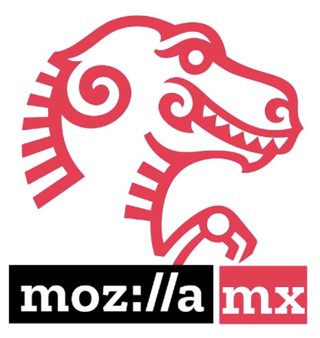
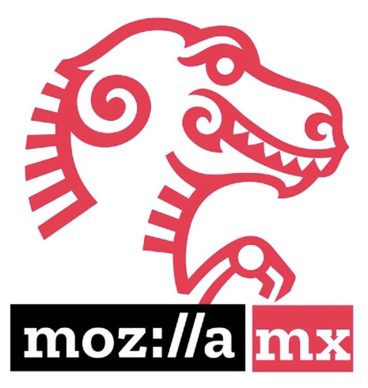

¿Te interesa que la tecnología de voz funcione bien con las lenguas y variantes de México?
¡Únete a la Fundación Mozilla, al Institutos de Investigaciones Antropológicas (IIA), al Instituto de Investigaciones en Matemáticas Aplicadas y Sistemas (IIMAS) de la Universidad Nacional Autónoma de México y a Mozilla México durante tres días de talleres interactivos, paneles y un hackató n con la oportunidad de ganar hasta 20.000 MXN!
| Fecha | Hora | Evento |
|---|---|---|
| Miércoles 4 de mayo | 10:00—12:00 | Contributón Conferencia de apertura con preguntas y respuestas, stand de donación de datos (+ refrigerio) |
| Jueves 5 de mayo | 10:00—14:00 | Hackatón Demos, stand de donación de datos, ceremonia de entrega de premios (+ almuerzo) |
| Viernes 6 de mayo | 09:45—16:15 | Taller Charlas, panel, stand de donación de datos (+ almuerzo) |
Este evento es una colaboración entre la Fundación Mozilla, el Instituto de Investigaciones Antropológicas, el Instituto de Investigaciones en Matemáticas Aplicadas y en Sistemas, Indiana University Gateway México, Mozilla México, Comunidad Elotl y nuestros socios de NVIDIA.